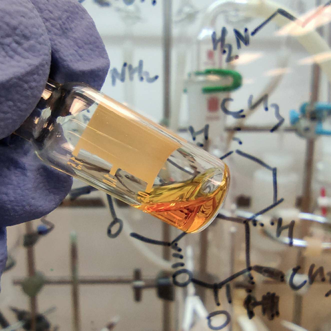

YE JIQING's Lab@AHMU
Distinguished Professor
Associate Researcher
Medicinal Chemistry, Inflammation and Immune Mediated Diseases Laboratory of Anhui Province
School of Pharmacy, Anhui Medical University (AHMU), Hefei, China 230032
Email: jiqing_ye@ahmu.edu.cn